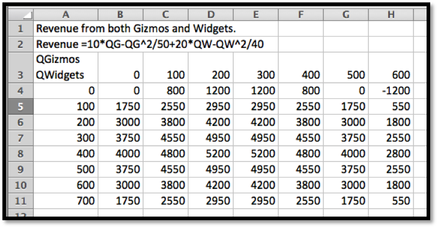
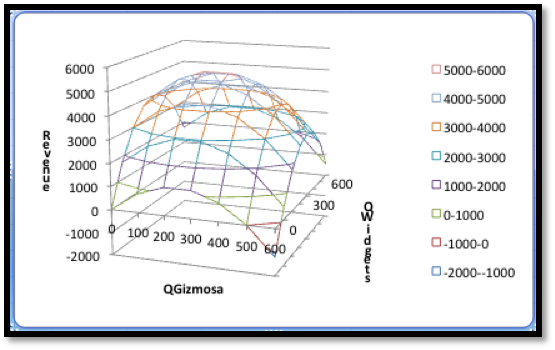
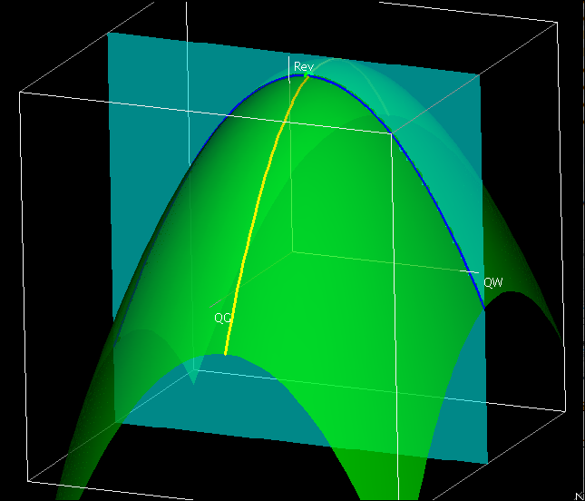
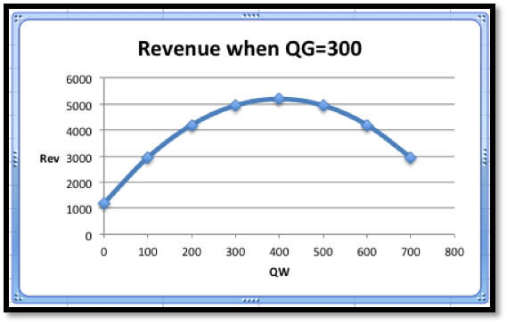

Example 1.2.1. Optimizing Revenue with Two Products.
I have a company that produces two products, widgets and gizmos. The two demand functions are:
\begin{align*}
\PriceGizmo\amp =10-\frac{\QuantityGizmo}{50}=10-\frac{\text{QG}}{50}\\
\PriceWidget\amp =20-\frac{\QuantityWidget}{40}=20-\frac{\text{QW}}{40}\text{.}
\end{align*}
This gives me the following revenue function:
\begin{equation*}
\revenue(\QG,\QW)=10QG-\frac{\QG^2}{50}+20\QW-\frac{\QW^2}{40}\text{.}
\end{equation*}
Look at the functions of one variable obtained by treating either QG or QW as a constant. Use this information to find where we maximize revenue.
Solution.
In terms of the last example, we want to start with a table and a wire frame chart.


The wires are obtained by intersecting the graph of the function with a plane where QW or QG is held constant.

Thus, when we treat either QW or QG as a constant we effectively are looking at one of the wires of the wire frame. To illustrate this, we will look at the wires corresponding to \(\QW=400\) and \(\QG=300\text{.}\) When \(\QG=300\text{,}\) our revenue function simplifies to
\begin{align*}
\revenue(300,\QW) \amp =3000-1800+20\text{QW}-\frac{\text{QW}^2}{40}\\
\amp =1200+20\QW-\frac{\QW^2}{40}\text{.}
\end{align*}
Thus, the wire corresponding to \(\QG=300\) is a parabola that bends down.
The interactive below shows how the wireframe is built from cuves defined by slice curves defined by cut planes.

To find the vertex of the parabola, we take the derivative of our function of QW and set it equal to zero.
\begin{equation*}
\frac{d}{d\QW} \revenue(300,\QW)=20-\frac{\QW}{20}\text{.}
\end{equation*}
This derivative is zero when \(\QW=400\text{.}\) That is the only possible place on this wire where we can have a maximum.
Similarly, when \(\QW=400\text{,}\)
\begin{align*}
\revenue(\QG,400) \amp =10\QG-\frac{\QG^2}{50}+4000\\
\frac{d}{d\QG} \revenue(\QG,400)\amp =10-\frac{\QG}{25}\text{.}
\end{align*}
This derivative is zero when \(\QG=250\text{.}\) That is the only possible place on this wire where we can have a maximum.
Putting the information together, the maximum must occur at \((250,400)\text{.}\) Putting these values back in the original equation gives a maximum of $5250 for the revenue function.